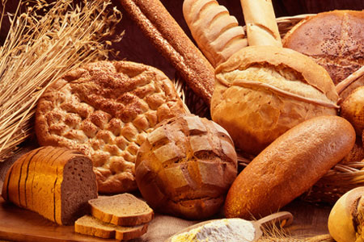
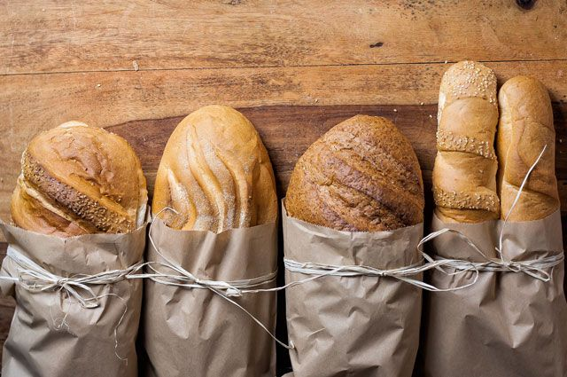
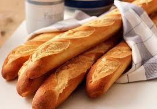

Всегда свежий хлеб
Французский багет и итальянская чиабатта, бородинский хлеб: свой, особенный рецепт хлеба есть у каждого народа. Объединяет всех только одно: чем качественнее ингридиенты, тем вкуснее и ароматнее получится сам хлеб.Наши пекарни приглашают купить хлеб в Городе в одной из точек обширной сети. В нашей булочной вы найдете батоны, багеты, бездрожжевой, солодовый, ржаной, кукурузный хлеб.Вся выпечка производится только из натуральных ингредиентов: свежие куриные яйца, настоящее сливочное масло, ржаная, кукурузная мука, отруби, солод, смеси семян и специй. Мы не стараемся удешевить производство с помощью некачественных добавок, но цена на хлеб в пекарне остается доступной для каждого.
Батоны
Не все знают, но батон – это отдельный вид хлебобулочных изделий. Он отличается от хлеба формой, способом приготовления, тестом. Батон имеет вытянутый облик, который часто формируют руками – хлеб обычно выпекается в круглой или прямоугольной форме из-за более жидкого теста. В нашей булочной можно попробовать батоны: нарезной, деревенский маленький и большой, 8 злаков, с луком, отрубной.
Хлеб
Белый, ржаной, кукурузный, солодовый, отрубной, угольный – широкий выбор хлеба невысокой стоимости.В меню хлеба представлены:
- Классический бородинский хлеб;
- Детокс с углем;
- Кукурузный;
- Ржаной;
- Люкс хлеб из смеси нескольких сортов муки и отрубей;
- Ржано-пшеничный;
- Солодовый;
- Традиционная итальянская чиабатта.
Багеты
Традиционный французский хлеб выпекается по определенным стандартам, регулирующим его вес, размер, состав. Визитная карточка багета – очень хрустящая корочка. Эту выпечку обычно не режут ножом, а ломают руками. свежевыпеченный багет черствеет уже к вечеру.Наша прекарня предлагает багет французский, багет органический и багет с натуральным Голландским сыром..
Сколько стоит выпечка в нашей пекарне
Хлеб - базовый продукт, который люди покупают ежедневно. Однозначно ответить, сколько стоит хлеб, непросто – цена зависит от состава, веса, вида выпечки, добавок в тесто. Недорогой продукт с продленным сроком годности из сетевого супермаркета нельзя сравнивать со свежей выпечкой из натуральных составляющих. Однако природный состав не подразумевает заоблачный цены, ведь традиционный хлеб производится из муки, хлебной закваски и соли. Наша пекарня предлагает низкие цены хлеба в Городе без снижения качества.
Чем отличается наша пекарня от всех ей предшествовавших?
Мы бы ответили так: применена новая концепция, которая предполагает изменение технологии производства, изменение пропорций в рецептах нашей выпечки, увеличение весовой доли начинки.
Налажено производство вареников с различными начинками и пельменей из натуральной говядины. В наличии имеется мороженое Заречного хладокомбината, только из натуральных ингредиентов, без использования растительных жиров.
Ну и самое главное: у нас всегда в продаже свежая выпечка и разные виды хлеба, в том числе бездрожжевого и хлеба из цельнозерновой муки.
Каким долженбыть настоящий цельнозерновой бездрожжевой хлеб? Многие, покупая у нас хлеб, восклицают: "Он черствый! Его же не разжуешь!» На это мы отвечаем: "Он таким и должен быть» В данном случае мы имеем в виду настоящий цельнозерновой бездрожжевой хлеб, без примесей, разрыхлителей, стабилизаторов, подкислителей, красителей, производство которого начато в "Пекарне" и чьи свойства оказались немного непривычными ряду потребителей, привыкший под "цельнозерновым" хлебом понимать то, что предлагают им крупные промышленные производители.